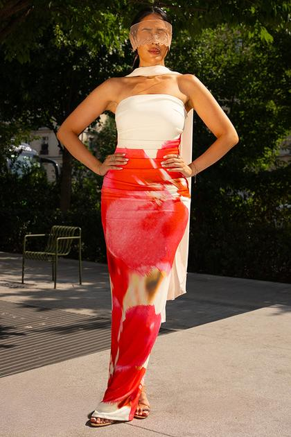
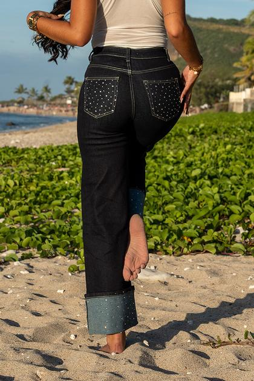
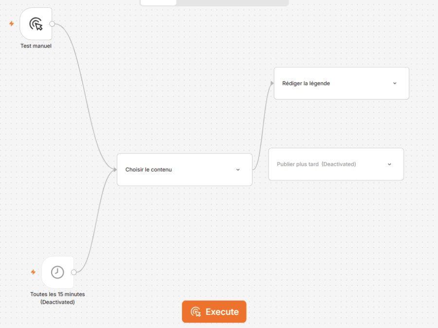
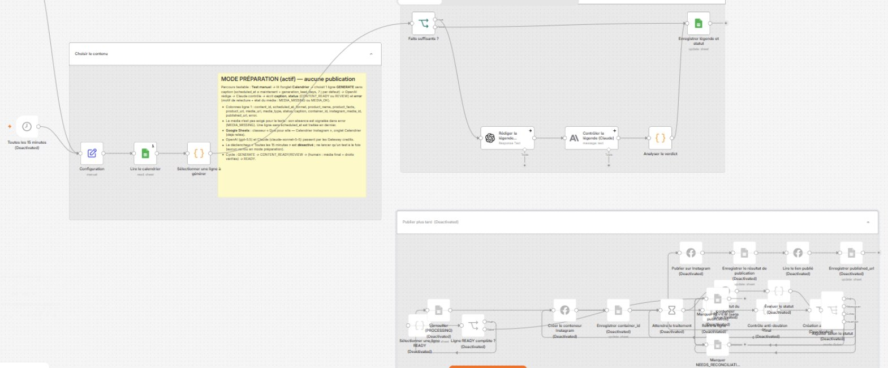

Shop de vêtements pour femmes · La Réunion
Cas d'usage · Cadrage avant lancement
Préparer les Reels Instagram de Que Pour Elle avec l'IA, sous contrôle
La Community Manager prépare un Reel à partir des photos d'un shooting existant. Un workflow n8n lit le calendrier éditorial : GPT-5.5 rédige la légende, Claude la contrôle, et le résultat revient dans le calendrier. Le montage vidéo reste à tester. La CM vérifie, corrige et décide seule de la programmation dans Meta.
Ce brief présente nos choix, les justifie et dit ce qui reste à vérifier. Nous avons construit un prototype n8n en mode préparation, sans aucune publication. Aucun résultat n'est inventé : les chiffres sont des estimations, signalées comme telles.




Quelle approche ? De l'IA générative, encadrée par des règles fixes
Nous n'entraînons aucun modèle : il n'y a ni apprentissage supervisé, ni apprentissage non supervisé. Un modèle de langage déjà entraîné, qui sait lire des images, rédige les textes. Tout le reste suit des règles écrites à l'avance ou reste une décision humaine. C'est un workflow aux étapes fixées, pas un agent : le modèle ne choisit ni les étapes, ni les outils, ni la publication.
- HumainLa direction envoie le brief. La CM choisit 4 à 6 photos autorisées.
- Règlen8n lit le calendrier éditorial (Google Sheets) : produit, faits, date prévue.
- IA générativeGPT-5.5 rédige la légende à partir des seuls faits du calendrier. Claude Sonnet 5.5 la relit et rend un verdict.
- RègleSi les faits manquent, rien n'est rédigé. Selon le verdict, la ligne passe en « prête » ou « à revoir ».
- Règle · à testerMontage : Creatomate ou un modèle CapCut assemble les vraies photos. Pas encore dans le prototype. Aucune image n'est générée.
- HumainLa CM relit, corrige ou refuse avec un commentaire. Elle programme elle-même dans Meta.
Prototype construit · Mode préparation
Le workflow n8n, étape par étape
Voici ce que fait réellement notre prototype « Que pour elle — Instagram ». Il prépare une légende à partir d'une ligne du calendrier éditorial, la fait relire par une seconde IA, puis la laisse en attente de la CM. Il ne publie rien : la branche de publication est construite mais désactivée.
- RègleTest manuel
Lancé à la main, un test à la fois. Le lancement automatique toutes les 15 minutes est désactivé.
- RègleGoogle Sheets · Calendrier
Lit le calendrier Instagram et prend la prochaine ligne à préparer, au statut GENERATE.
- RègleFaits suffisants ?
Vérifie que la ligne contient le produit et ses informations.
Sinon : rien n'est rédigé, la ligne part en REVIEW.
- IA générativeGPT-5.5 · OpenAI
Rédige la légende à partir des seuls faits du calendrier.
- IA générativeClaude Sonnet 5.5 · Anthropic
Contrôle la légende : faits, prix, ton. Rend un verdict.
- RègleAnalyser le verdict · Google Sheets
Écrit la légende et son statut : CONTENT_READY ou REVIEW, avec le motif et l'état du média.
- HumainLa CM
Ajoute le média final, vérifie les droits, corrige si besoin et passe la ligne en READY.
- DésactivéPublier sur Instagram
Branche construite mais coupée. La CM programme elle-même dans Meta.
GENERATE→CONTENT_READYouREVIEW→READY(humain)→Publié · désactivé


Intégration : les quatre pièces du système
Un abonnement Claude Pro est un compte personnel payant. Il ne donne pas accès à l'API, et sur ces offres grand public les conversations servent à l'entraînement sauf désactivation. Pour un workflow d'entreprise, nous passons par les API d'OpenAI et d'Anthropic sous conditions commerciales. Les deux indiquent ne pas entraîner leurs modèles sur les données API par défaut ; la durée de conservation exacte est à confirmer dans chaque contrat. Un compte personnel payant n'est ni une offre professionnelle, ni un accès API.
GPT-5.5 (OpenAI) rédige, Claude Sonnet 5.5 (Anthropic) contrôle. Deux modèles de deux éditeurs : l'un ne relit pas son propre texte.
À tester : un modèle plus petit suffit-il pour l'une des deux étapes ?
Pas de chat : un workflow n8n relié au calendrier Google Sheets, où la CM relit et valide.
Montage : Creatomate ou CapCut, pas encore branché.
n8n Cloud, annoncé en Europe (Francfort). Les modèles calculent chez OpenAI et Anthropic, aux États-Unis par défaut. Google Sheets et Creatomate : région à vérifier.
Le logo ne dit pas où vont les données : on cartographie les flux.
Les faits du produit sont lus dans le calendrier à chaque demande, avec la consigne de ton. Pas de fine-tuning, pas de base documentaire.
Les poids du modèle ne changent pas.
| Qui ou quoi | Accès accordé | Accès refusé | Protection |
|---|---|---|---|
| Community Manager | Compte n8n nominatif, dossier de validation, Meta Business Suite | Clé API, facturation | Double authentification, accès retiré à son départ |
| Gérante | Administration n8n, consoles API OpenAI et Anthropic, facturation | — | Double authentification, plafond de dépense mensuel |
| Workflow n8n | Calendrier Google Sheets (lecture, écriture de la légende et du statut) | Clientes, commandes, messages privés. Branche de publication Instagram désactivée | Clés API dans le coffre de n8n, droits minimaux, réactivation sur décision de la gérante seulement |
| GPT-5.5 (API OpenAI) | Faits du produit et consigne de ton | Toute donnée cliente, tout fichier non choisi | Conditions commerciales, contrat de traitement (DPA) à signer |
| Claude (API Anthropic) | Légende proposée et faits du produit, pour contrôle | Toute donnée cliente, tout fichier non choisi | Conditions commerciales, contrat de traitement (DPA) à signer |
| Creatomate | Photos et textes validés pour le montage | Le reste du catalogue | DPA à signer, région à vérifier |
Vigilance : orange Nous sommes dans le cas « service professionnel administré, API externe ». C'est possible si le contrat, les accès et l'usage sont validés. Les données qui partent sont surtout publiques (fiches produits, charte), mais les photos montrent des mannequins reconnaissables, et les photos d'une collection pas encore lancée sont confidentielles. Tant que les contrats ne sont pas vérifiés, rien ne part.
Avant de signer
Ce que nous demandons à nos fournisseurs
On ne classe pas des marques, on vérifie un service précis pour nos données et notre usage. Mêmes questions à OpenAI, Anthropic, n8n, Google et Creatomate.
- EntraînementNos photos et textes servent-ils à entraîner vos modèles ? Engagement écrit dans le contrat.
- ConservationCombien de temps gardez-vous nos données ? Peut-on les supprimer ? Une conservation zéro est-elle possible ?
- Lieu et sous-traitantsOù sont traitées les données ? Quels sous-traitants ? Quel cadre pour les transferts hors UE (DPA, clauses contractuelles types) ?
- Droits sur les contenusÀ qui appartiennent les textes et vidéos produits ?
- ConsommationPubliez-vous l'énergie, le carbone et l'eau par requête ou par vidéo rendue ? Avec quel périmètre et quelle méthode ? Quel mix électrique pour vos data centers ?
- Coûts et plafondsPeut-on fixer un plafond de dépense et recevoir des alertes ? Le suivi de consommation est-il détaillé ?
- IncidentsQui nous prévient en cas de fuite ou de panne, et sous quel délai ?
- ArrêtComment récupérer nos modèles vidéo et supprimer nos données si nous arrêtons ?
Les 7 angles d'analyse
Ce que chaque angle change dans notre projet
Pour chaque angle : un constat, une preuve ou une inconnue, puis une action.
Données
Personnes reconnaissables
Biais
Règles
Coûts
Environnement
Travail humain
Combien ça coûte, combien ça rapporte
Coût complet sur 12 mois, contrôle compris
Hypothèse : 8 Reels par mois, soit 96 sur un an. Nous comparons à la méthode actuelle, avec la même qualité attendue. Mesuré · Estimé · Inconnu
| Ce que ça coûte | Nature | 12 mois |
|---|---|---|
| Paramétrage du workflow (2 à 4 jours de prestataire) | Estimé · fixe | 800 à 1 600 € |
| Formation IA de la CM (une demi-journée) | Estimé · fixe | ≈ 200 € |
| n8n Cloud, offre Starter (≈ 24 €/mois) | Prix public · récurrent | ≈ 290 € |
| Creatomate, offre d'entrée (≈ 30 à 55 $/mois) | Prix public · récurrent | ≈ 330 à 610 € |
| API OpenAI + Claude (rédaction et contrôle, moins de 0,30 € par Reel, 3 essais compris) | Estimé · variable | < 30 € |
| Contrôle et corrections de la CM (≈ 3 h/mois), déjà déduits du temps libéré ci-contre pour éviter un double compte | Estimé · temps | ≈ 36 h |
| Total en argent, année 1 | ≈ 1 650 à 2 730 € |
| Ce que ça apporte | Nature | 12 mois |
|---|---|---|
| Temps libéré : 1 h 30 → 45 min par Reel, relecture comprise | Estimé · à chronométrer | ≈ 72 h |
| Valeur de ce temps (exemple à 20 €/h chargé) | Coût horaire à demander | ≈ 1 440 € |
| Shootings évités | Coût et nombre à demander | ? |
| Régularité de publication, notoriété, ventes en ligne | À mesurer après lancement | ? |
| Gain chiffrable, année 1 | ≈ 1 440 € + shootings |
Notre lecture, sans l'enjoliver
Sur le seul temps gagné, l'année 1 n'est pas rentable : la mise en place pèse plus lourd que les heures libérées. Le projet devient intéressant si on évite au moins un shooting par an, ou dès l'année 2, quand il ne reste que 650 à 930 € de coûts récurrents. Une heure gagnée n'est pas un euro économisé : c'est du temps libéré pour la CM, à réaffecter.
Alternative sans IA à comparer pendant les essais : des modèles CapCut ou Canva prêts à l'emploi, avec une bibliothèque de légendes types. Coût presque nul. L'IA doit prouver qu'elle fait mieux.
Prix publics relevés en octobre 2026 (OpenAI, Anthropic, comparatifs n8n et Creatomate), à reconfirmer avant achat. Tarif prestataire et coût horaire : hypothèses de travail.
Des risques aux décisions
Tableau des risques
Nous distinguons les risques qui existent déjà dans le métier de ceux qu'ajoute l'IA.
| Risque | Origine | Qui le subit | Priorité | Mesure | Responsable | Preuve gardée |
|---|---|---|---|---|---|---|
| Un prix, une taille ou une promo faux est publié | IA + métier | Clientes, boutique | Forte | Contrôle automatique légende/fiche, puis vérification par la CM avec la fiche datée du jour | CM | Case cochée dans le journal de validation |
| Une photo de mannequin est utilisée hors contrat | Métier | Mannequins, boutique | Forte | Seul le dossier « photos autorisées » est relié au workflow | Gérante | Copie des autorisations |
| Des données partent hors UE sans cadre | IA | Mannequins, boutique | Moyenne | Compte API pro, DPA signés, aucun compte personnel | Gérante | DPA archivés |
| Des Reels génériques ou peu représentatifs | IA | Clientes, marque | Moyenne | La CM choisit les photos, grille mensuelle de diversité | CM | Grille mensuelle |
| Une relecture trop lourde, du travail bâclé à reprendre | IA | CM | Moyenne | Temps de relecture chronométré, 3 régénérations au maximum | Gérante | Journal des temps |
| Une musique non autorisée dans un Reel | Métier | Boutique | Moyenne | Uniquement la bibliothèque musicale autorisée par Meta pour les comptes pro | CM | Source notée dans le journal |
| La facture ou l'empreinte dérivent | IA | Boutique, environnement | Faible | Plafond de dépense sur chaque API, test d'un modèle plus petit | Gérante | Relevé mensuel |
Savoir s'arrêter
Signaux, conditions d'arrêt, et qui décide
- SignalUne erreur bloquante repérée en relecture, une relecture qui s'allonge, un engagement en baisse, un incident chez un fournisseur.
- Qui peut dire stopLa CM peut bloquer n'importe quel Reel, sans se justifier. La gérante peut suspendre tout le workflow.
- RevueBilan au bout de 3 mois, puis chaque année : temps, coûts, erreurs, engagement, consommation.
On suspend l'usage si :
- une seule erreur de prix ou de promo est publiée ;
- la relecture dépasse 45 minutes sur 3 Reels de suite ;
- plus de 2 erreurs bloquantes apparaissent sur 10 Reels ;
- l'engagement passe sous le niveau des Reels faits à la main pendant un mois ;
- un fournisseur ne peut pas garantir ses conditions sur les données.
Décision : la gérante. Retour immédiat à la méthode manuelle.
Prochaines étapes
Ce qui reste à vérifier, et auprès de qui
| Question | À qui la poser | Comment on la tranche |
|---|---|---|
| Combien de temps prend vraiment un Reel aujourd'hui ? | La CM | Chronométrage sur 3 Reels : préparation, montage, vérification, corrections |
| Le contrôle de Claude attrape-t-il vraiment les erreurs de GPT ? Un modèle plus petit suffit-il ? | Le groupe | Erreurs glissées volontairement dans 3 lignes du calendrier, mêmes produits, grille fixée avant le test |
| Creatomate fait-il mieux qu'un modèle CapCut ou Canva ? | Le groupe | Comparaison du temps total et du rendu sur les mêmes photos |
| Les contrats des mannequins et du photographe couvrent-ils cet usage ? | La gérante | Relecture des contrats, avenant si besoin |
| Où sont traitées les données, et pendant combien de temps ? | OpenAI, Anthropic, n8n, Google, Creatomate | Lecture des DPA et réponses écrites |
| Une mention « contenu généré par IA » est-elle nécessaire ? | Un conseil juridique | Avis écrit sur l'article 50 de l'AI Act et les règles de Meta |
| Combien coûte un shooting, et combien de Reels par mois ? | La direction | Chiffres réels pour refaire le calcul de rentabilité |
Note sur ce rendu
Pourquoi nous avons utilisé l'IA pour ce cas d’usage
- Un gain de tempsLe contenu vient de notre travail en groupe et de nos recherches. L'IA nous a aidés à le structurer et à le mettre en page.
- L'essentiel mis en avantLe temps gagné a servi au fond : intégration, juridique, coûts, risques et décisions.
- Un livrable propre et clairUne seule page lisible sur ordinateur comme sur téléphone, aux couleurs de Que Pour Elle, partageable par un simple lien.
Nous avons appliqué notre propre méthode. L'IA a produit une première version. Le groupe a relu et vérifié chaque information, et chaque prix a été recherché à sa source avant le rendu. C'est le contrôle humain que nous proposons pour les Reels de Que Pour Elle.